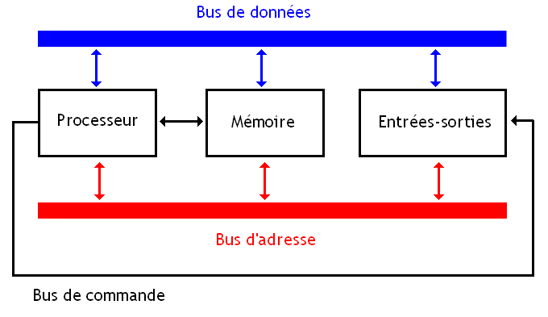

Histoire
Cours
Quiz
Équipe
🌙
L’essentiel du cours
Architecture de Von Neumann
Unité de contrôle
Unité arithmétique et logique
Mémoire
Périphériques

Le processeur
Exécute les instructions
Composé de UC et UAL
Effectue calculs et opérations logiques
Les types de mémoire
Type
Rôle
Registres
Mémoire très rapide du processeur
Cache
Accélère l’accès aux données
RAM
Données en cours d’utilisation
Disque dur
Stockage permanent
Systèmes d’exploitation
Interface entre utilisateur et matériel
Gère les ressources
Exemples : Windows, MacOS, Linux